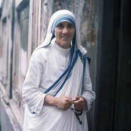

<div class="container">
    <div class="jumbotron">

        <link rel="stylesheet" href="//maxcdn.bootstrapcdn.com/bootstrap/3.3.1/css/bootstrap.min.css"/>
        <body style="background-color:powderblue;">

        <style>
            .larger-image {
                width: 500px;
            }

            img {
                border-radius: 10px;
            }
        </style>

        <div class="row">
            <div class="col-xs-12">

                <h1 class="text-center" style="font-family: monospace; font-size: 400%;">Mother Teresa</h1>
                <h2 class="text-center" style="font-family: courier; font-size: 200%;"><b><i>Saint Teresa of Calcutta</i></b></h2>

                <!-- Mother Teresa Image -->
                <p style="text-align:center">
                    
                </p>

                <p class="text-center" style="font-size:150%;">Timeline of Mother Teresa</p>
                <div class="col-xs-12 col-sm-10 col-sm-offset-1 col-md-8 col-md-offset-2">
                    
                    <ul>
                        <li><strong>1910</strong> - born Anjeze Gonxhe, Albania</li>
                        <li><strong>1917</strong> - Her father Died when she was 8 years old.</li>
                        <li><strong>1928</strong> - She left home to join the Sister of Loreto in Rathfanham, Ireland and learn 
                            English with the view of becoming a missionary.</li>
                        <li><strong>1929</strong> - She arrived to India.</li>
                        <li><strong>1931</strong> - Teresa took her first religious vows.</li>
                        <li><strong>1937</strong> - Took her solemn vows, when she was a teacher at the Loreto convent school 
                            in Entally, Eastern Calcutta.</li>
                        <li><strong>1944</strong> - She was appointed as headmistress.</li>
                        <li><strong>1948</strong> - Began work with the poor.</li>
                        <li><strong>1950</strong> - Received Vatican permission for charity.</li>
                        <li><strong>1952</strong> - Opened her first hospice with help from Calcutta officials.</li>
                        <li><strong>1955</strong> - Opened "Nirmala Shishu Bhavan" for orphans and homeless youth.</li>
                        <li><strong>1965</strong> - Opened houses in Venezuela, Italy, Austria.</li>
                        <li><strong>1982</strong> - Rescued 37 children trapped in front-line hospital by brokering a temporary 
                            cease-fire between the Israeli army and Palestinian guerrillas.</li>
                        <li><strong>1991</strong> - Returned to Albania, opening a Missionaries of Charity brothers' home in Tirana.</li>
                        <li><strong>1996</strong> - Operated 517 missions in over 100 countries.</li>
                        <li><strong>1997</strong> - Died at age 87.</li>
                    </ul>

                    <blockquote>
                        <p>"Though no one knew it at the time, Sister Teresa had just become <i>Mother</i> Teresa"</p>
                        <footer><cite>Joseph Langford</cite></footer>
                    </blockquote>

                    <h3>If you need to know more information about <strong><i>Mother Teresa</i></strong>, look at her 
                        <a href="https://en.wikipedia.org/wiki/Mother_Teresa" target="blank">Wikipedia page</a>.
                    </h3>
                </div>
            </div>
        </div>
        
        <footer class="text-center">
            <hr>
            <p>Written and coded by 
                <a href="https://www.freecodecamp.org/fccad45c4c3-9961-4ada-9f90-f293ef3b6ed5" target="blank">Nisal Fernando</a>.
            </p>
        </footer>
    </div>
</body>
